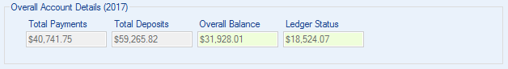

Spending Overview gives you the big picture and lets you see where every penny of your money is going and coming from.
Spending Overview gives you the big picture and lets you see where every penny of your money is going and coming from.
The items in the Edit menu allow you to change your totals to create hypothetical scenarios to help with finanical planning. Create a new scenario with  Create New Scenario to enable these features.
Create New Scenario to enable these features.
Monthly Income
Displays your monthly income for each month of the year. The values in the Payments and Deposits columns can be edited while working in a scenario. The Payments column can be edited if Deposits is selected in Filter Options (Deposits will be modeled in the Category/Payee table). The Deposits column can be edited if Payments is selected in Filter Options (Payments will be modeled in the Category/Payee table).
Filter Options
Perform calculations on your ledger data using Filter Options. You can calculate based on Year, Categories or Payees, and Payments or Deposits. These options will be disabled after creating a scenario. If you want to enable them reset your totals back to there actual values from your ledger by selecting either Close Scenario or Reset Spending Overview.
Overall Account Details
Displays your account details for your ledger for the currently selected year or the current hypothetical year of a scenario. These values will update as you change the selected year in Filter Options and create and modify scenarios.
Current Year Details
Displays the totals for the currently selected year or the current hypothetical year of a scenario. These values will update as you change the selected year in Filter Options and create and modify scenarios.
Features
The items in Edit allow you to change your current spending or income totals and pretend they are something else. You can create new monthly totals, edit existing totals, and remove entire entries. You can also copy selected monthly totals to the next month, selected months, or the rest of the year. Your account details will update based on this new information. Making changes in Spending Overview will not alter your actual ledger data. These features turn Spending Overview into a sandbox for you to try different yearly scenarios.
 My Scenarios: Manage all your scenarios in one place
My Scenarios: Manage all your scenarios in one place
- Create New Scenario: Choose between four Modeling Options to create a hypothetical scenario.
- Create Monthly Expense/Income: Create a new monthly total to add to your scenario. Select a Category or Payee depending on which you have selected in Filter Options and set an amount. This amount will be applied to each month of the year.
- Edit Expenses/Incomes: Allows you to change the amount of a selected monthly total in the table. You can edit multiple amounts at once.
- Remove Expenses/Incomes: Allows you to completely remove a monthly total from the table. You can remove multiple amounts at once.
- Remove Categories/Payees: Allows you to completely remove a Category or Payee from the table. You can remove multiple Categories or Payees at once.
- Copy to Next Month: Allows you to copy the selected totals in the table to the next month. You can only copy totals from one month at a time.
- Copy to Selected Months: Allows you to copy the selected totals in the table to whichever months you choose from the selection window. You can only copy totals from one month at a time.
- Copy to Rest of Year: Allows you to copy the selected totals in the table to the rest of the year. You can only copy totals from one month at a time.
- Spending Overview Charts: See your monthly totals from the Category/Payee table displayed in a color coded chart.
- Reset Spending Overview: Allows you to reset the Category/Payee and Monthly Income table to the actual values from your ledger when you are finished creating scenarios.
 Export Spending Overview Tables: Allows you to export the Category/Payee and Monthly Income table to a CSV (Comma delimited) (*.csv) file which can be opened with Microsoft Excel. Continue performing calculations to your heart's content.
Export Spending Overview Tables: Allows you to export the Category/Payee and Monthly Income table to a CSV (Comma delimited) (*.csv) file which can be opened with Microsoft Excel. Continue performing calculations to your heart's content.